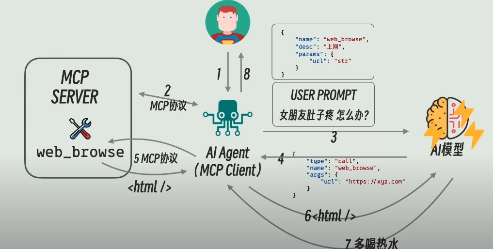
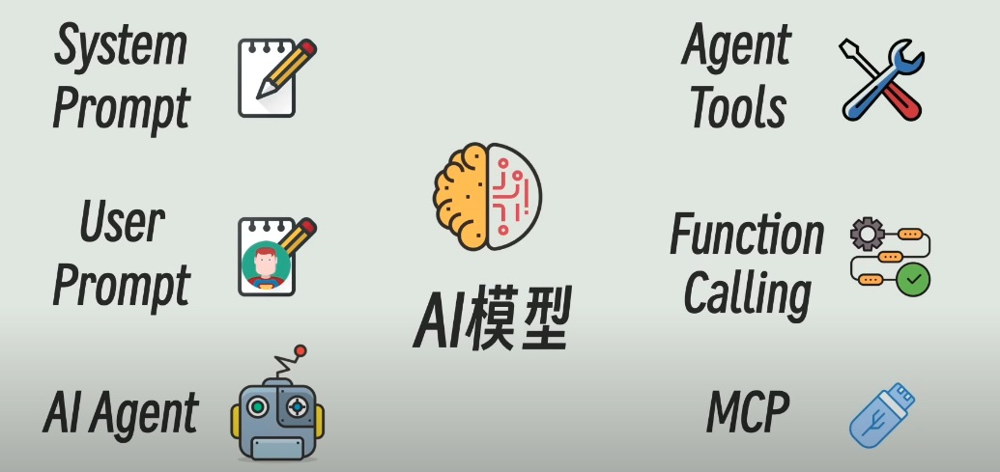

前言
最近太常聽到這些詞：MCP, AI-Agent, n8n, LangChain
他們到底是什麼？ 一開始跟 OpenAI 聊，但總感覺不是很清晰
感謝 Gemini CLI 讓我更完整理解整個概念，我覺得解釋的比 ChatGPT 清楚。
在一問一答的過程當中，終於明白這些差異。也想要自己記錄下來，不然最近會感覺聊一聊下次就忘了。
但如果有理解錯誤也希望有看到的人可以給我更清晰的指引！
正文
MCP
首先 MCP 全名 Model Context Protocol
也參考了這邊文章
這篇文章詳細的説明 MCP Server / MCP Client
比較有趣的是我一開始一直搞錯 Client & Server，一直覺得 AI 這邊屬於 Server
但比較簡單的記憶方式就是， 哪裡是使用者 input 的地方，哪裡就是 Client，所以 LLM 一定是 Client 端的。
搞懂了 MCP 大概是什麼東西之後，我還是不知道他跟 Ai-Agent 的實際關聯怎麼連起來？
MCP 跟 AI-Agent 的關聯?
先說一下 AI-Agent，AI-Agent 使用者可以用比較白話文的指令讓 AI 一次完成多個步驟，過程他會自己思考分析執行並返回結果。
而 MCP 是屬於 AI-Agent 的一部分: Tool 工具。因為 LangChain 可以去定義所有 call API function 有哪些。要整合起來並定義在 Tools 中。
例如我的 Tools 有這些功能可以用：
- 檔案系統操作：read_file, write_file, list_dir
- 取得 figma 操作：get_figma_pages
這個 Tools 定義 json 格式，像這樣：{ "tool": "get_figma_pages", "arguments": {} }
在使用者下 Prompt 後，LLM 去找對應的 Tools 來使用 function
例如有一個情境：我想知道我現在 figma 設計有哪些頁面?
LLM 收到 prompt 後會找到get_figma_pages這個 function 可以使用
這個 function 本質上就會去呼叫 figma API 取得該使用者頁面有哪些。這邊假設 figma 回傳： ['home', 'product', 'about us']
這個結果會再傳給 LLM，請他總結得出最後答案回傳給使用者文字。
所以 LLM 回答可能會長這樣： 您的 Figma 設計檔中包含了以下頁面：首頁、產品列表、和關於我們。
有提供相對的 API 去取得資料可以更精準的使用 AI-Agent。 另外，web browse 工具內建於每個 MCP server 服務，使用它可以做一般的網路搜尋。


到這邊為止我的個人總結：
後端所有的 function collect 起來放到 tools
LLM 被問問題時就會去瀏覽 tool 看有沒有適合的 function 可以使用
有的話就會拿到 API 返回資料，再丟給 LLM 總結文字回傳給使用者結果。使用者 -> 後端程式 -> LLM (選擇工具) -> 後端程式 (執行工具) -> LLM (總結結果) -> 使用者。
n8n ＆ LangChain
n8n 是 AI-Agent 嗎？ n8n 本身不是 agent, 而是它可以建立 agent 流程。 他也可以只是建立自動化工作流程，如果是自動化工作流程那就等同於 RPA 的功能。但因為 n8n 可以建立多個節點跟 LLM 互動，所以可以組成 Agent。但反的來說，我還沒確定 Power automate 可以做 Agent 嗎？
n8n 是一個可以以 Low-Code 的方式去打 API 並把不同服務串接起來成 workflow 的平台。
- 以 LangChain 為核心(Code-First)
- 環境：整個 Agent 是一個 Python 應用程式。
- 骨架：LangChain 的 AgentExecutor。
- 工具：用 Python 來定義 Tools。如果需要連接 Google Sheets，需要自己使用 Google 的 Python SDK 或 API 來定義函式
update_google_sheet()。 - 優點：有靈活性跟可以客製化函式。
- 缺點：開發 Tools 工作量大，需要為每個服務編寫 API 串接。
- 以 n8n 為核心(Low-Code)
- 環境：整個 Agent 是一個 n8n 工作流程。
- 骨架：n8n 工作流程本身。
- 工具：n8n 內建數百個節點就可以直接去接節點串連起來。
- 優點：開發速度快，不用全部自己 code 來接。
- 缺點：函式靈活度受限。
如果用 n8n 來做 agent，觸發的方式使用Webhook
整個服務可能長這樣：
LINE 聊天室使用者輸入需求 -> 觸發 Webhook -> n8n 跑 workflow -> 回傳結果
一開始聊天室就要先註冊 n8n webhook，之後訊息就會自動 push 到 n8n 觸發這個流程。
以上因為我還未實際使用過 LangChain, n8n 的 Agent, 還尚待驗證，但還蠻期待玩的。
來自別人的有趣專案想法：
用 AI 來產生新的 RPA 流程或者是修改特定的 code，例如 5-10 行。
我轉譯：
用 Ai-Agent 來下指令，根據指令產生新的 RPA 流程或根據指令把現有的 workflow 做調整
例如：幫我修改『每日報告』那個流程，把儲存的資料夾從報告改成每日歸檔。
這樣的可行性？
Power Automate 有提供 API? 有的，可以透過 Microsoft Dataverse Web API，但要付費使用。
解決了這個問題基本上就可行了，以下假設步驟：
步驟：
- 理解 prompt 與定位： 理解使用者指令。Agent 首先先呼叫
list_all_flows()Tools 找到flow_id。 - 讀取程式碼： Agent 呼叫另一個 Tools
get_flow_definition(flow_id)，取得該 workflow 的流程定義(一大包 JSON 傳回來)。 - 推理與修改：
- Agent 將使用者的 prompt ＋ 上一部取得的 JSON 結果放進新的 Prompt。
- New Prompt:
你是一個 Power Automate 專家，請根據使用者的要求，修改以下這個 JSON，然後把修改後的完整新 JSON 輸出給我。 - Send LLM 修改程式碼：LLM 會分析需求跟 JSON 在對 folderPath 欄位將值從
報告改成每日歸檔，回傳新的 JSON。
- 回傳使用者結果： 收到新的 JSON，呼叫 Tools
update_flow(flow_id, new_json)，Power automate 修改完成。
減少 Token 的方法？
- 優化 prompt： 縮減描述跟指令長度或之前對話做一個
摘要來減少長度。 - Model 選擇： minor 指示用小、相對便宜的模型來判斷，major 指示用大、相對貴的模型來給出回答。例如：用小模型判斷使用者意圖，用大模型修改程式碼。
- 快取 Cache： 經常使用的查詢存起來，如果有修改再更新 Cache 資料進行同步
小近況
最近完成專案論文，由於理解速度太慢，完全沒有用到最新最炫的新技術有點可惜，但在現在終於理解的當下也感覺到一陣愉悅，至少在工作之前花一點時間把它搞懂了。